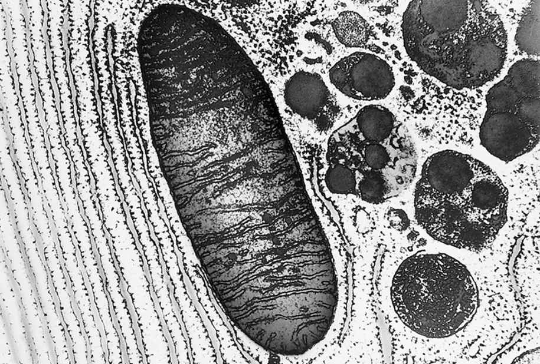
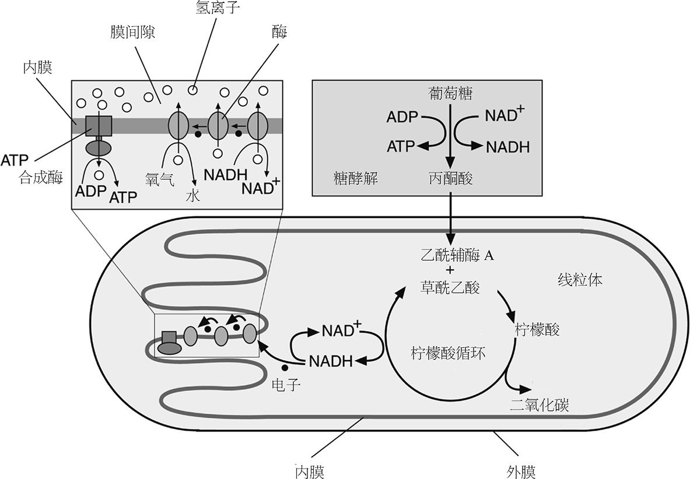
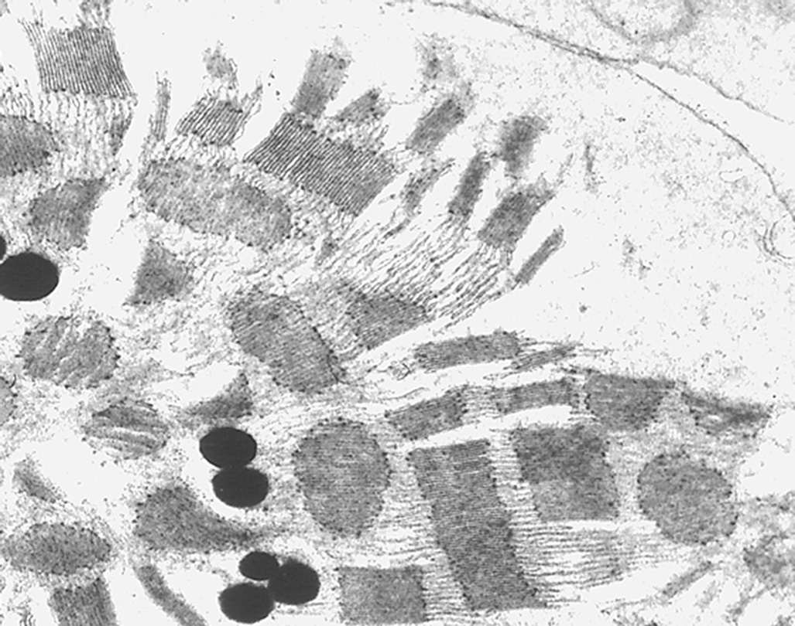
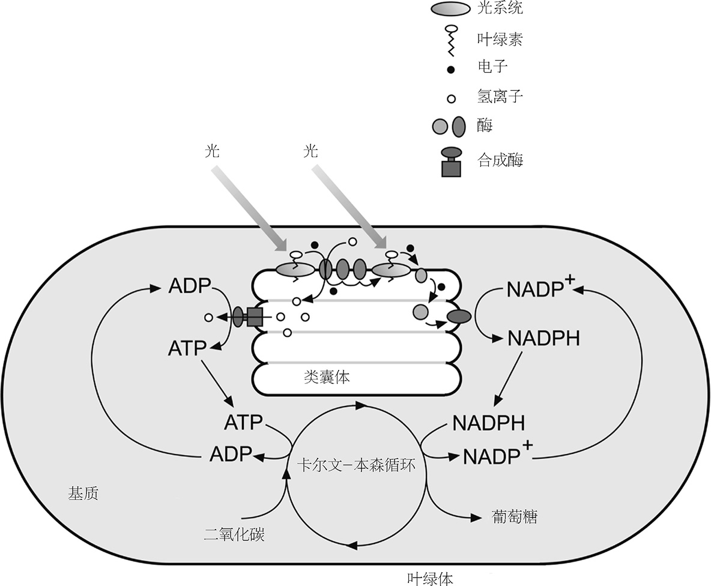

想象一下，如果汽车像人体一样，最快速度只能在短短的冲刺阶段维持一小会儿，那会怎么样？那我们就不可能沿着高速公路开到时速（不妨让我们说实话）80英里了 注 ——最快的速度只够我们开半英里去商店而已。要走的路程越远，速度就会越慢，这样才不至于把可怜的车子跑坏。（没准你跟我一样，也开过这种车？）
表面而言，其实汽车和人类比我们想象的要更具相似性，这么讲的原因可不是弗兰·奥布赖恩提到的那种。 注 两者都通过在氧气中燃烧富能燃料来获取能量，而且都排出二氧化碳。不过汽车能以接近极速行驶很长时间而不疲劳。只要你往油箱里不断加油，它就能几乎无限地一直行驶。而短跑运动员却不能用短跑的速度跑完整个马拉松，即使不断地给他们嚼葡萄糖片也无济于事。这是为什么呢？
这个问题把我们引向了人体供能的分子机制，也就是代谢过程。在很多方面，对生命最好的惯用定义在于代谢，而非复制。进化生物学家也许会说，我们生存的目的在于繁衍——可是，我们却并非时时刻刻都在努力进行生殖活动，哪怕最好色的人也不是。而一旦停止代谢，即使只停下一两分钟，我们可就死翘翘了。
摸摸你的手，你会觉得它是暖的。（要不是的话，就摸摸腋下或者舌头。）我们的身体一般都比周围环境要暖。无论行走还是睡眠，我们的体温总保持在接近37℃的健康温度。要维持它只有一种办法：靠细胞持续输出热量，这是代谢的一种副产物。热量并不是这里的关键问题，它只不过是无法避免而已，因为任何能量转化都必然会像这样浪费掉一部分。我们代谢过程的根本在于制造分子。细胞若不持续地更新自身就无法生存，它们需要为蛋白质制造新的氨基酸，为细胞膜制造新的脂类物质，为细胞分裂制造新的核酸。只要我们活着，细胞的车轮就不能停下，而转动车轮正是要消耗能量的。
因此，细胞的社群颇像我们对工业革命社会的那种老印象：在大规模的社会化生产中，一大批工人专门生产能量。在我们的肝脏中，制造能量是头等大事，里面每一个细胞中都有成百上千个能量工厂。就像威廉·布莱克《耶路撒冷》中所写的黑暗邪恶工厂，它们既制造有用的东西，也制造垃圾。不过细胞整体会有更有效的办法防止垃圾污染自己的卧榻。
既然制造能量对生命至关重要，那么代谢中的任何瑕疵都会令人不安。我们能看到生命是多么脆弱——但凡哪个过程中断了一下，整个系统就会陷于停滞，就像我们的社会结构要依赖于连续不断的电力和燃气供应一样（更不用说清洁的空气和充足的水）。而人体这台机器（请原谅这种启蒙时代的比喻）非常可靠，如果情况顺利能运转80多年之久，直到各部分无可逆转地失效，这正是进化之创造力的深刻证据。
还是让我们从简单的，至少貌似简单的说起。1850年，英国科学家迈克尔·法拉第在伦敦的皇家研究所开了一系列讲座，题目是“一支蜡烛的化学史”。他希望展现，在蜡烛火苗耀眼的光亮中，我们能够读出整个化学科学（那时人们所理解的化学）和超越化学的更多东西。他这样讲：“要说自然科学研究的入门，没有比这更佳、更人人皆宜的敲门砖了。”
在训练有素的学者眼中，任何一种自然现象都可以是布莱克的那一粒沙， 注 都可以是窥见无垠世界的一扇窗。蜡烛自然也是，尤其是在19世纪的伦敦，那时的展示讲座还无须让人目眩神迷。我虽不太清楚内燃机是怎样工作的，却知道它和蜡烛燃烧的区别并不大。蜡烛燃烧是氧化反应，即某种燃料与空气中的氧气结合，产生热以及——此例中还有的——光。
即使是石蜡的燃烧，人们至今也并未完全搞清其中的所有细节。而当时的法拉第，自然也肯定没有明白问题中的许多重要方面。不过，燃烧的本质其实就是产生能量的一切化学过程的本质。首要条件是，它必须是个下降的过程。
这是化学变化中的一个关键点，也是宇宙中一切变化过程的关键要素：变化都包含上升和下降这两种方向，而在充分自然的情况下，变化都会朝向下降的方向。而上升和下降的地形是谁决定的呢？归根结底，决定性因素是一种现在略显神秘的东西，称为熵。无人能够反驳的热力学第二定律这样讲：在一切变化过程中，宇宙的熵总和都保持增加。 注
在流行文化中，人们把熵等同于无序。这是个还不算坏的简化：系统的熵所度量的是，有多少种办法能够重排系统中的原子，而又不引起任何可察觉的变化。如果有人进入我的办公室，将本已乱七八糟的纸张重新打散成若干堆，这样的变化我很有可能不会察觉到。但如果像做梦一样，他把所有论文都认真地整理好，排序归档，那我马上就会注意到这个变化。粗略地说，相较于无序系统，有序系统中不可分辨的重排方式较少，因此熵较低。
第二定律其实表达的是这样一件事：系统从有序向无序发展的可能性较大，不过是因为无序的可能数量要比有序的可能数量多。若系统包含好几万亿个分子，这种概率化的陈述就几乎成了确定性的。第二定律之所以称为定律，只是因为违反它的可能性极小，几乎不可能发生。
不过确实 在某些情况下，事物会变得更加有序。水蒸气冷凝可以成为对称的六角形雪花。宇宙定律也不能阻止我们把一堆砖块排列起来盖成房子。这些情况都是真真切切的，但它们并未违反熵增加原理。原因是，第二定律对于宇宙整体才适用。我们可以使某一部分变得更加有序，但却要以更大的代价让别处变得更加混乱，以补偿那些有序性的增加。一般这种补偿的形式是热量。我们的确可以通过辛劳工作砌一堵墙，但墙砌好了，我们的身体也向环境中辐射了不少热量，增加了周围环境的无规则热运动，而熵的总账保持盈余。只有增加无序性才能得到秩序。
而生命细胞显然无视熵增的压力，维持着自身的组织结构。为了解释其中的缘由，物理学家埃尔温·薛定谔在《生命是什么》一书中提出“负熵”这个有点模糊的概念，讲生命有机体能够从环境中摄取它。这听起来有点像是某种生命活力论乔装打扮成了热力学的样子，而且今天我们还会在言谈中听到有的人将酶称作“逆熵器”。不过，生命的机理没什么特殊或神秘的。再摸一下你的手（腋下、舌头）。你的身体所做的不就是将熵从体内抽到环境中吗？
我前面说到，化学变化都朝向下降的方向。但有时候，变化似乎会表现出朝着上升的方向。酶就特别擅长将分子向上升方向驱赶，而非生物的世界也会发生这种情况。但在这些例子中，方向之所以会逆转，是因为它有更强大的下降反应过程在驱动。你可以将一个物体推上斜面，只要它和另外一个更重的物体通过滑轮连接，而另一个物体在下降就可以了。重物体下降，轻物体上升。化学家彼得·阿特金斯这样讲：“理解……生物化学，本质上就是要在巧妙遮挡的幕后寻找重物。”
生物化学中的能量制造，基本上就是要在单个重物完全落下之前，拉起尽可能多的重量。像我们这样的动物，重物就是食物分子中蕴藏的能量。
我们也可以用河流中的水力发电来打比方。无论我们做什么，河水都是要下降的，它永远不会自发地流回到高山上。于是我们的目标就是捕获下落过程中尽可能多的能量释放。这也正是我们体内的能量工厂与蜡烛火苗间的主要区别之一。火苗中的燃烧是不可控的，我们只能得到光和热。而在人体中，燃烧受到严格的控制，按照一层一层的顺序分步进行，化学能量就在各个步骤间被释放或者储存。
发电厂会燃烧煤、石油、天然气，但显然它不仅仅只是一个扩大了的燃烧的锅炉。燃烧只是达到最终目的的一个手段。热量用来将水变为水蒸气，水蒸气的压力推动了涡轮机，涡轮机带动电线线圈在大磁臂中旋转，于是电线中就产生了电流。在这个过程中，化学能转化成热能，再转化成机械能，最后转化成电能。所有发电厂都会有大量安全和管理机制：有人工去检查压力仪表，检查运转机件结构是否完好；自动传感器会进行测量；故障应急装置能够防止系统发生灾难性的故障。
细胞中的能量制造也一样复杂。简短的一番描述根本对不住这系统的非凡美妙。细胞似乎把一切事情都考虑到了，用蛋白质器件来精细地调整一切。
细胞的主要投入产物是燃料和氧气，即食物和空气。细胞若是缺少氧气，它们的火苗就会熄灭。我们可能会在食用之前对燃料施以一番精致的烧炙，因为这些初步的燃烧能创造出令味觉愉悦的化合物来。但无论是巧克力棒、菠菜叶还是猪蹄，任何食物都会在之后被分解为更加同质化的燃料。这是在消化时发生的，胃和肠道中的酶能够将烹饪的美味分解为原始的分子组分。
食物中有多种富含能量的成分，本质上可以分为糖类、脂类和蛋白质。糖类是由葡萄糖分子连成长链形成的聚合物。消化过程中，脂类可以分解为脂肪酸分子和甘油分子。同等质量下，脂类包含的能量是糖类的两倍，心脏有65%的能量都是从脂类中获取的。
葡萄糖是代谢过程中的主要“重物”之一。它在酶的辅助下氧化，推动一种名为三磷酸腺苷（ATP）的高能分子形成，这种分子就在细胞的其他过程中充当能量来源。ATP是生物化学的能量包。很多酶催化的反应都需要ATP来推动反应往上升方向进行。 注 ATP是维护细胞完整及组织结构的关键，所以细胞要通过燃烧每一个葡萄糖分子来不遗余力地制造尽可能多的ATP。食物氧化所释放的能量中，约40%保存到了ATP分子中。
ATP之所以富含能量，是因为它有点像弹簧。它包含三个磷酸基团，像火车车厢那样连接起来。每个磷酸基团都带有一个负电荷，这也就意味着它们之间会相互排斥。但它们又被化学键结合在一起，因而无法逃出彼此的魔爪。当它们被拉开时，磷酸基团的斥力就会突然爆发。 注
磷酸基团间的化学键可以在与水的反应中被切断，因此这种反应也称作水解。每当有一个键水解，能量就会释放。ATP把最外层的磷酸释放出去，转变成为二磷酸腺苷（ADP）；再将第二个磷酸砍掉就变成单磷酸腺苷（AMP）。两次切断都会释放出相当多的能量。
自食物刚进入口腔起，分解食物的工作就开始了。唾液中包含一种称作淀粉酶的消化酶，能够将糖类聚合物斩断成葡萄糖。这也就是为什么食物咀嚼之后会变得更甜。在蔬菜中，可消化的糖类大多是淀粉。植物细胞壁中的纤维素也是一种葡萄糖的聚合物，但它能抵御淀粉酶的攻击。
在胃里，食物会遭到更严苛的处置。由于盐酸的存在，胃液像电池酸液一样具有了腐蚀性。酸液使得食物分子中的蛋白质螺旋变得松散，以便胃液中的胃蛋白酶来分解。
不过胃还仅仅是个存储未消化食物的器官而已。胃容物离开胃进入小肠后，降解过程更加活跃。小肠液中包含许多种体积小、干劲大的酶，每种酶都专门负责一种拆解任务。淀粉酶分解糖类，其他酶分解蛋白质、脂肪和核酸。分解后的碎片会通过肠道内膜被身体吸收，进入血管和淋巴管，之后营养物质就被输送到身体各处。肠道内膜上有很多微小的褶皱，还有指头状的突起，称作小肠绒毛；这些结构大大增加了肠道的表面积，从而确保营养得到高效的吸收。如果将它们拉平，那么一个人的小肠内膜表面积足以覆盖一个网球场。
很多消化酶都是在胰腺中合成的，胰腺有连接到小肠的导管。这些消化酶分子制造出来是为了分解掉我们细胞的那些组成成分，那么它们为什么不会破坏我们自身的组织呢？
这些酶在制造时都附带了一个分子保险栓，这个保险栓能够使酶失去活性。这时的酶称作酶原。直到它们到达肠道或者胃中，保险栓（一种肽链的环）才被去掉，一般是被另一种专门负责此项任务的酶去除的。消化道中覆盖有一层黏液，它可以保护消化道不被消化酶分解。如果保护性黏液太薄，那么腐蚀性的消化液就会作用于暴露出的组织上，造成溃疡。
胃容物在进食后数小时内会被分解掉。但即便在消化结束以后，身体依然需要燃料。所以我们的身体要将储备物积蓄起来，以备之后使用。我们肝脏中约十分之一的重量，以及肌肉中约百分之一的重量是一种称作糖原的物质，这是种紧凑、支链很多的葡萄糖聚合物。肝脏和肌肉细胞用收到的部分糖类制造糖原，并制成小颗粒的形状，每个大小约为一毫米的千分之一到千分之四，它们就成了细胞的食品贮藏室。
当血液中的糖含量降低到一定水平以下，身体就知道是时候享用一下存储起来的糖原了。糖含量低会触发胰腺中两种激素的合成——胰高血糖素和肾上腺素，它们告诉细胞开始将糖原分解成葡萄糖。
血液中糖分过多则会触发另一个警报系统，其中就有胰腺中胰岛素的合成。胰岛素能向细胞发出信号，让它们开始将葡萄糖转化为糖原——存储糖类而不是消耗糖类。胰岛素作为糖类供大于求的指标，也能指示细胞去制造别的物质——比如蛋白质和脂肪（另一种应急的能量储备），而停止制造能量。
胰岛素是一种多肽（类似于蛋白质的）激素，由基因编码。有一种常见的遗传缺陷，会导致胰岛素的一种前驱分子（称作胰岛素原）无法正常转化为胰岛素。这种制造胰岛素的障碍正是糖尿病的一个主要原因，也意味着这种疾病的患者需要经常补充一定剂量的激素，以调节血糖含量水平。
糖的燃烧分两阶段，第一阶段过程称作糖酵解（把糖分解），将葡萄糖转化为称作丙酮酸的分子。这一阶段又可以按顺序分解为十种酶分别催化的十小步。分解糖的前五步是上升的过程，需要消耗ATP分子来推动：每分解一个葡萄糖分子就需要将两个ATP分子转化为ADP。不过之后把碎片转化为丙酮酸的五步则是下降的，它可以让ADP重新结合成ATP。这一步中得到四个ATP分子，因此在这一阶段中每消耗一个葡萄糖分子，净得两个ATP分子。所以糖酵解能为细胞储蓄能量。
丙酮酸一般接下来就会进入燃烧过程的第二阶段：柠檬酸循环，这一阶段需要氧的帮助。但如果氧气分子不足，即处在厌氧条件下，应急预案就会启动，丙酮酸会进而转化为乳酸。 注 例如当我们剧烈运动、供氧速率赶不上糖酵解速率时，身体又需要快速满足高能量的需求，这种情况就会发生。当乳酸在肌肉组织中积累时，就会产生酸痛的症状。
作为收割葡萄糖能量的方式，厌氧代谢的效率是比较低的。所以非常剧烈的运动会使肌肉很快疲惫不堪，原因是能量消耗的速率大于能量产生的速率，无论有多少可用的葡萄糖都无济于事。短跑运动员能力有限的原因也在于此。而长跑运动员则找到了可以持续的步调，让柠檬酸循环运转起来，有氧（即氧气驱动的）代谢的整个过程全部发挥作用。 注
这个过程是在线粒体中进行的。这是细胞中一种香肠状的隔间，每个人体细胞里都分布着好几百个线粒体（如图21）。线粒体做的第一件事情是在酶催化下，将丙酮酸转化为一种称作乙酰辅酶A的分子。脂肪分解得到脂肪酸和甘油，最终也会生成这种乙酰辅酶A。

之后的循环是个八种酶催化的反应过程，它先把乙酰辅酶A转化成柠檬酸，接着再转化成其他各种分子，最终得到草酰乙酸这种分子。这个终结又是新循环的开端，草酰乙酸会再次和乙酰辅酶A发生反应产生柠檬酸。在循环的某些步骤中，会生成副产物二氧化碳。二氧化碳溶解在血液中，由血液带到肺部，最后呼出体外。因此，事实上原始葡萄糖分子中的碳原子被扔到了最终的产物二氧化碳里面，完成整个的燃烧过程。
不严谨地讲，在循环中被扔掉的还有电子，柠檬酸循环将电流输送到线粒体的另一部分中。这些电子用来把氧气分子和带正电的氢离子转化成水，这是个能量释放的过程。这些能量继而被捕获，制造大量的ATP。
不过电子在这里的流动和在金属导线中的并不一样，它们是由烟酰胺腺嘌呤二核苷酸（NAD）分子携带的。在柠檬酸循环中的两个反应里，一个电子和一个氢原子被加到带正电的NAD离子上，我们把这个新的分子记作NADH。它就是电子的交通工具。NADH分子把电子传递给氧分子，发动氧和氢形成水，同时重新生成NAD。NAD分子又再次投入柠檬酸循环中（如图22）。

大齿轮上还嵌有小齿轮。NADH并非直接把电子给予氧气。这一下降过程又可以分为几步，每一步都给线粒体蓄能。线粒体是由一层外膜围起来的，外膜渗透性较强，柠檬酸循环的主要燃料组分就是通过外膜进入的。外膜里面又有一层内膜，内膜无法渗透。高度卷曲的内膜上布满了酶分子。在内膜上，NADH将电子丢给一个膜上的酶，电子又接龙似的传给其他蛋白质。最终电子到达一种称作细胞色素C氧化酶的膜蛋白质，它的分子上有一处结合氧气分子的位点。电子最后是由这种酶输送给氧的。
细胞色素C氧化酶的氧分子结合位点也可以结合其他比氧更强的分子或离子，比如氰化物和一氧化碳。一旦这种情况发生，电子就再也无法传给氧，这部分机制就停止运作。这一层齿轮的阻塞会导致整个线粒体机制陷入停顿，柠檬酸循环终止，整个系统无法再制造ATP。而现存的ATP会在数分钟内耗尽。因此氰化物和一氧化碳都是潜在的有毒物质，可能导致迅速的窒息死亡。任何干扰电子从NADH转移到细胞色素C氧化酶的物质也会产生相似的效果。一些最致命的毒药都属于这类物质。细胞产生能量的这部分机制对攻击非常敏感。
电子传递链中的膜蛋白依次交出自己得来的礼物，释放一部分能量，把内膜内的氢离子推到内膜之外。这样一来，随着电子依次传递，内外膜间隙中的氢离子浓度也就得到了提升。
这个过程就像是给电池充电。膜两侧的氢离子浓度不同，因而造成两个区域的电荷量不同，就像是电池两极的电势（即电压降）不同。或者你也可以把膜蛋白看作一种泵，能将水抽到山上的水库里，从而在水再次流下的过程中获取能量。
氢离子水库在线粒体中驱动着ATP的合成，像推动微型水轮机一样推动着某个装置。氢离子能通过一种叫ATP合成酶的蛋白质重新流回内膜里面，而这种酶可以利用能量把ADP转化为ATP（如图22）。ATP合成酶有两个主要部分，基本部分是一个稳稳嵌在膜上的圆柱状管道，氢离子可以通过。在管道的一端，即内膜之内的开口处，附着有一个环状蛋白质结构，由六个球形子单元排成环状。当氢离子通过时，环形端头就会旋转，一旋转就能多造些ATP。ATP合成酶处于细胞产能机制的中心，1999年的诺贝尔化学奖颁发给了保罗·博耶、约翰·沃克和延斯·斯科，他们的贡献正是解释了ATP的结构及许多作用机理。
因此，糖酵解和柠檬酸循环是非常不同的两种代谢过程。一个是无氧的，一个是需氧的。糖酵解有可能自封，虽然其中一步需要用到常在柠檬酸循环中产生的NAD，但NAD也可以通过将丙酮酸转化为乳酸在厌氧条件下重新生成。糖酵解和柠檬酸循环这两个过程很像是两种独立的代谢途径绑定在了一起。
而这很可能恰恰正是它们的情况。人们认为，线粒体曾经是分立的细菌生物体。有证据能支持这种说法：它们拥有自己的DNA，与细胞核中的主基因库完全不同（参见第45页）。人们相信约20亿年前，线粒体开始了与利用糖酵解途径进行无氧呼吸的单细胞生物的共生关系。
大约在那时，绿藻（原始的植物生命）的蔓延导致地球大气中氧气含量的急剧增加。而在之前，空气中的氧非常少。那种类线粒体的细菌能够利用柠檬酸循环“呼吸”掉氧气。无氧细胞制造丙酮酸，需氧菌能用作燃料，同时需氧菌制造NAD，能够帮助无氧细胞的糖酵解过程，因此两者间的共生关系能够发展起来。最终，无氧细胞吞噬了需氧菌，两者合为一体，组成复合的有氧呼吸细胞。后来的就众所周知了。
酵母菌则从来没经历过这些，它仍是糖酵解厌氧菌，靠糖类生存。不过酵母细胞并非将丙酮酸转化为乳酸，而是转化为酒精，千百年来为我们带来啤酒的香气。这个过程就是发酵过程，历史上正是从这个过程出发，我们才日渐理解了酶的催化作用。发酵过程中也会产生燃烧的最终产物二氧化碳，它们会在世界每个角落的发酵缸中冒出泡泡。
氧气通过肺部进入体内，但它们并不容易溶解在血液中，因此也就无法简单通过溶解的办法传递到线粒体处。（相反，二氧化碳则易溶，于是就从细胞跟随血流到达肺部。）氧气会被血红蛋白这种蛋白质打包，它对氧气分子的亲和力非常强，打包起来由血红细胞输送。血红细胞几乎完全是为了这一个任务而存在的。它和别的细胞不一样，基本上就是一包血红蛋白，不包含DNA和RNA，细胞里没有各种隔间，几乎再无其他酶。细胞成熟以后，制造血红蛋白所需的全部遗传和酶催化部件会在最后时刻被排出。
血液的红色与铁锈的标志性红色很相似。血红蛋白分子的中心是铁原子，它被圆环状的卟啉分子团团包围。卟啉分子加上铁原子即为一个血红素基团，它们吸收蓝光和绿光的能力很强，因此看上去呈鲜艳的红色。每个血红蛋白分子包含四个血红素基团，其中铁原子的位置为氧分子提供了附着位点。
作为氧气的输送者，血红蛋白必须牢牢地束缚住它的货物，同时也得让货物能够脱离。怎样才能两全其美呢？血红蛋白用了一种聪明的诡计，蛋白质常常都会用这种小诡计，即结合目标分子后就改变自己的行为。简单地讲，就是蛋白质的一部分能够“感觉到”另一部分发生了什么。
肺部血管中有很多氧气分子，当一个血红素基团附着上氧分子后，会发出一个震动信号，促使另外三个血红素基团也去捕捉氧分子。血红蛋白基本上是在肌肉组织中给出氧分子，传递给肌红蛋白。肌红蛋白是另一种结合氧分子的蛋白质，对氧的亲和力比血红蛋白还要强。当一个氧分子离开血红蛋白时，“反震动”就会削弱其他三个血红素基团结合货物的能力，于是它们也就欣然释放了氧分子。这些震动称作变构，震动虽小，却是蛋白质链折叠构型的显著变化。
所有脊椎动物和不少无脊椎动物都用血红蛋白来运送氧分子，不过不同的物种其确切的蛋白质形状有所不同。节肢动物和软体动物则使用另一种结合氧分子的蛋白质，称作蚯蚓血红蛋白。这种蛋白质里也有铁原子，不过不是被血红素基团束缚住的。它结合氧后会呈现介于紫色和粉色之间的颜色，未结合氧时则无色。有些海洋无脊椎动物会用另一种金属元素来输送氧，它们用来结合氧的蛋白质称作血蓝蛋白，呈现蓝色，也就说明其中包含铜元素。它们可谓海洋中名副其实的“蓝血贵族”。
地球大气之所以富含氧气，靠的是植物的功劳。光合作用是生物利用光的能量来制造分子，而氧气就是光合作用的副产品。因为植物和光合细菌位于食物链的最底层，所以地球上全部生命的能量最终都来自太阳能。没有植物我们就都完了，不但我们自己每天没有面包吃，牛羊也只能在不长草的贫瘠牧场中饿死。
光合作用是一种非常非常古老的生命过程。至少35亿年前，大陆才刚刚形成、寸草不生的时候，藻类就开始进行光合作用了。这些生命体是第一批自养生物 ——自己养活自己，能够用光、水和空气中的碳等原材料来制造自己的分子。每年大约有600亿吨的碳会从大气中的二氧化碳被转化为富含能量的生物质。我们把其中的一部分吃掉，烧掉，盖房子，造桌子，喂给牲畜，浆成纸张，织成布匹。而更多的能量则落到地上，被微生物分解，变成易挥发的含碳化合物重新回到大气中。经过地质学尺度上的很长时间，很多会埋在地下，压缩成为煤炭，或是分解成为石油或天然气。
光合作用依赖于能够与光相互作用的分子，分子需要吸收光的能量，并把能量传递到化学过程中。如果说线粒体是哺乳动物细胞中的锅炉房，那么叶绿体就是植物叶子细胞里的光能中心（如图23）。大致说来，叶绿体里所发生的反应过程正是葡萄糖代谢的逆过程，它利用二氧化碳和水制造糖类。“燃烧”葡萄糖是个能量下降的过程，于是我们就知道，光合作用中产生葡萄糖就是个能量上升的过程。正因如此，植物才需要光的能量参与进来。植物利用这些能量并不仅是制造葡萄糖、然后编织进细胞壁里的纤维素而已，与之同等重要的还有用能量来产生ATP分子，驱动细胞里的化学反应。

有氧代谢和光合作用有若干相似之处。两者都包含两个独立的子过程——线性的反应序列与循环过程耦合，循环过程产生两个子过程都需要的分子，而两个子过程有着不同的进化起源。糖酵解和柠檬酸循环间的桥梁是作为电子摆渡船的NAD分子，而光合作用中两个子过程间的桥梁是个几乎一模一样的分子——磷酸NAD（NADP）。
在光合作用的第一阶段，光用来转化NADP，让它携带上电子（即转化成NADPH），并将ADP转化为ATP。这实际上是一个储能的过程，为叶绿体合成葡萄糖打下基础。第二阶段是个循环过程，称为卡尔文-本森循环，在这里ATP和NADPH用来将二氧化碳转化为糖（如图24）。

叶绿体中有层层叠叠的膜，称作类囊体膜，第一阶段就在膜表面上发生。类囊体膜上散布着一簇一簇的分子，称作“光系统”。在光系统中，能够吸收光的分子称作光合色素，它们开启了光能驱动的反应。光系统的核心称作光合反应中心，位于这个中心的是叶绿素a分子。叶绿素a能够大量吸收红光和蓝光，因而使叶子看起来呈绿色。
当叶绿素得到光能时，它会被“激发”，就像苹果树被摇晃。在激发态上，叶绿素束缚外层电子的能力减弱，于是其中一个电子就脱离它成为自由之身。这个电子接着会传递给一个酶。当酶收到两个从叶绿素“摇下来”的电子时，它就能把一个NADP阳离子转化成NADPH。在另一个光能驱动的反应中，缺了电子的叶绿素能重新从水分子中夺得一个电子。而水分子被分解为氢离子和氧原子。氧原子两两结合形成氧气分子，植物通过叶子表面的气孔把氧气释放出去。
叶绿素从水中得到电子的过程，实际上经过了一连串的分子传递，它们都嵌在类囊体膜上。传递过程的每一步都是能量下降的过程，都会释放能量，其中有某几步起到离子泵的作用，会将氢离子抽到类囊体膜的内部。膜上的ATP合成酶分子就利用膜两侧的不平衡作为能量源，风车般地将ADP转化为ATP。
不过，这时候光合作用还有任务没有完成，包括水的分解，以及能量源ATP、电子源NADPH的产生。ATP和NADPH这两种组分会释放到类囊体膜外面，即称作基质的液体中，它们在基质中驱动卡尔文-本森循环的反应过程，将二氧化碳转化为糖。这个阶段称为“暗反应”，因为其中并不需要光直接参与。美国化学家梅尔文·卡尔文推导出了这个过程中的大部分反应，为此他获得了1961年的诺贝尔奖。
今天，化学家对设计一个类似叶绿体的人工分子系统很感兴趣，这个系统可以利用阳光来驱动化学合成。亚利桑那州立大学的一个课题组用细胞状的合成结构模拟叶绿体，这种结构称为脂质体，是利用脂类分子做成的中空球形膜。研究人员在类脂体膜上撒有一些设计好的分子组合体，使它们能够执行与光合反应中心相同的任务：利用光能将氢离子抽入脂质体的内部。
研究人员将ATP合成酶分子注入他们的脂质体里，它们可以释放氢离子，并顺带制造了ATP。人们寄希望于ATP存储的能量能够用来进行化学合成，比如去执行某些工业上有用处的生化反应。
葡萄糖和蜡（一种烃类）都“蕴含能量”，利用氧气断裂它们的化学键，就可以以热能的形式释放出能量（除非将能量导入其他形式）。但是，有些化学家却还在寻找蕴含着更多能量的分子。那么一个分子里究竟能装得下多少能量呢？
阿尔弗雷德·诺贝尔就在19世纪为回答这个问题而奔忙，结果却是一个广为人知的反讽：他发明炸药积累了大量财富，却用财产资助了一项著名的年度和平奖金。诺贝尔的创新，并不在于他发明了一种富含能量的分子，而在于他找到了一种方法把已有的炸药包装成另一种形式，减少了它趁人不备就随意爆炸的机会。
最古老的炸药是黑火药，它是硫黄、硝石（硝酸钾）和炭的混合物，约公元11世纪在中国发明。在西方，人们未加多少改动就直接应用它（造成了很糟的后果），直到19世纪科学家开始寻求制造更猛烈爆炸的办法。1845年，瑞士化学家克里斯蒂安·舍恩拜因发现了硝化纤维，即用硝酸和硫酸对棉纤维（纤维素）进行处理得到的化合物。这是第一例“半合成”聚合物，是自然界和化学家手艺共同的创造。人们后来又用硝化纤维来制造赛璐珞——一种硬塑料，还有第一例人造丝。但硝化纤维也具有爆炸性，所以就成为了著名的火药棉。
火药棉暴烈的脾气很难控制：人们最初尝试批量生产它时，造成了好几例死亡事故。1847年，意大利化学家阿斯卡尼奥·索布雷罗合成了一种相似的危险物质，称作硝化甘油。阿尔弗雷德·诺贝尔在1859年开始研究这种化合物，试图找到一种办法使它变得稳定，除非人们刻意让它爆炸。虽然1864年的一场爆炸事故炸死了他的弟弟，诺贝尔依然坚持研究，最终发现，将一种称作硅藻土的黏土与硝化甘油混合能够得到泥灰状的炸药，可以让人们安全地操控。他给这种炸药起名叫甘油炸药。1875年，诺贝尔发明了炸胶，这是硝化甘油和火药棉的胶状混合物，比两种物质各自分开的威力都要大。
这些炸药大部分用于采矿和建设中的爆破，这给诺贝尔带来了财富。但它们终归无可避免地也会用于军事。19世纪末，英国和法国军队使用了无烟火药—— 一种类似于炸胶的炸药。德国军队使用了三硝基甲苯（TNT），只有用一种次级的炸药引爆它才会爆炸。阿道斯·赫胥黎在《美妙的新世界》中向我们讲解了这种致命混合物的奇特的化学特性：
上面所有这些化合物都是包含硝基的有机物质。所谓硝基就是一个氮原子连着两个氧原子。硝基化合物之所以有爆炸性，是由于这些材料在点燃时会使氮原子重新形成氮气分子。氮气分子的化学键非常稳定，在形成过程中释放大量的能量。同时，氧原子能够促进燃烧过程，使得燃烧迅速发生。开发威力更大的炸药，很大程度上就是要想办法把更多的硝基结合到有机化合物中。RDX（或称黑索金）炸药就通过这种办法改进了TNT，如今用在武器当中。目前所生产的威力最大的富氮化合物称作HMX，是高熔点炸药的缩写。
2000年初，芝加哥大学的化学家们设计了一种可能具有更多能量的硝基化合物。这种化合物名叫八硝基立方烷，包含八个碳原子组成的立方体，每个碳原子又连着一个硝基。这个分子不仅饱含硝基，而且立方体形状意味着碳原子间的键张力很大，很容易断裂。另外，由于分子形状紧致，它应该可以堆积起来形成密实的晶体形式。最初的实验还没有实现这种高密度的形式，但是计算结果已经预测，如果能造出这种形式，那么就单位质量来说它的爆炸能量将高于任何一种已知的非原子能炸药。
阿尔弗雷德·诺贝尔将遗产用于颁奖，可能是由于他的成果被用于杀伤和毁灭，他为此感到后悔，从而做出了这样的表示。但是很明显，并非所有化学家在面对与武器相关的研究时都会有这样的情感。在我个人看来，这种工作可以说是科学的不端。可更重要的是，对烈性炸药的研究表明，科学研究无法截然分成“纯粹”的、无关道德的科学部分，和低等的、满足社会“应用”的科技部分。制造八硝基立方烷确实是高超技术取得的辉煌成就，但它也得到了美国国防部的资助。
炸药这个例子向我们透露了分子科学的两面性。爆炸其实也是化学的一部分乐趣所在——在学校实验室里就能实现的经典爆炸反应，有几个崭露头角的化学家从没想要做做看呢？我所知道的就至少有一位德高望重的科学家曾经被学校开除，因为他差点把学校毁了。（他现在在研究能灭绝所有生物的巨大陨石的影响。）不过，从这些小爆炸、小闪光到德累斯顿和汉堡 注 的毁灭，只需要一小步。这是凶险的一步。